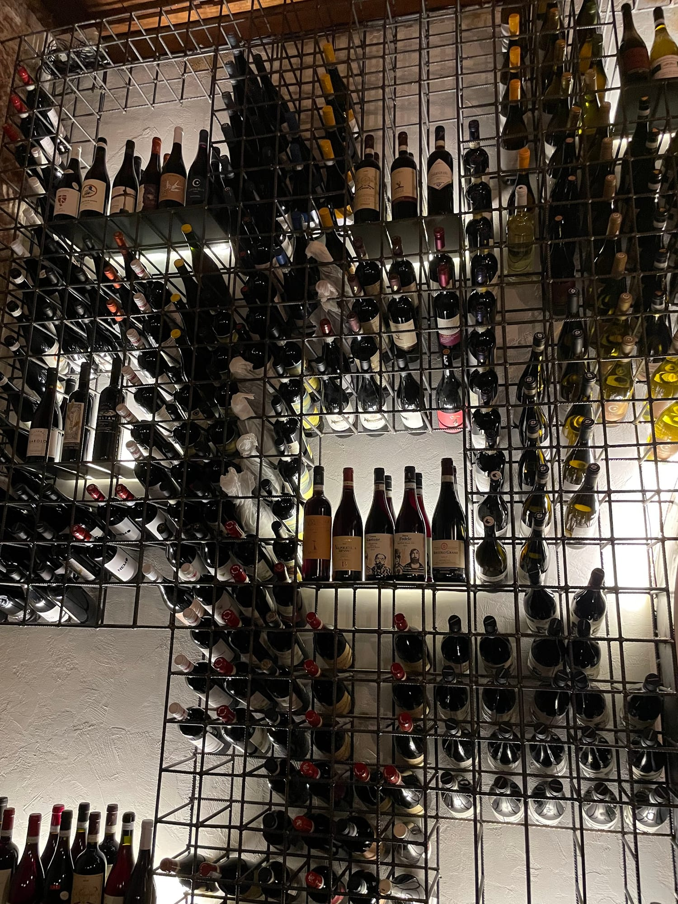
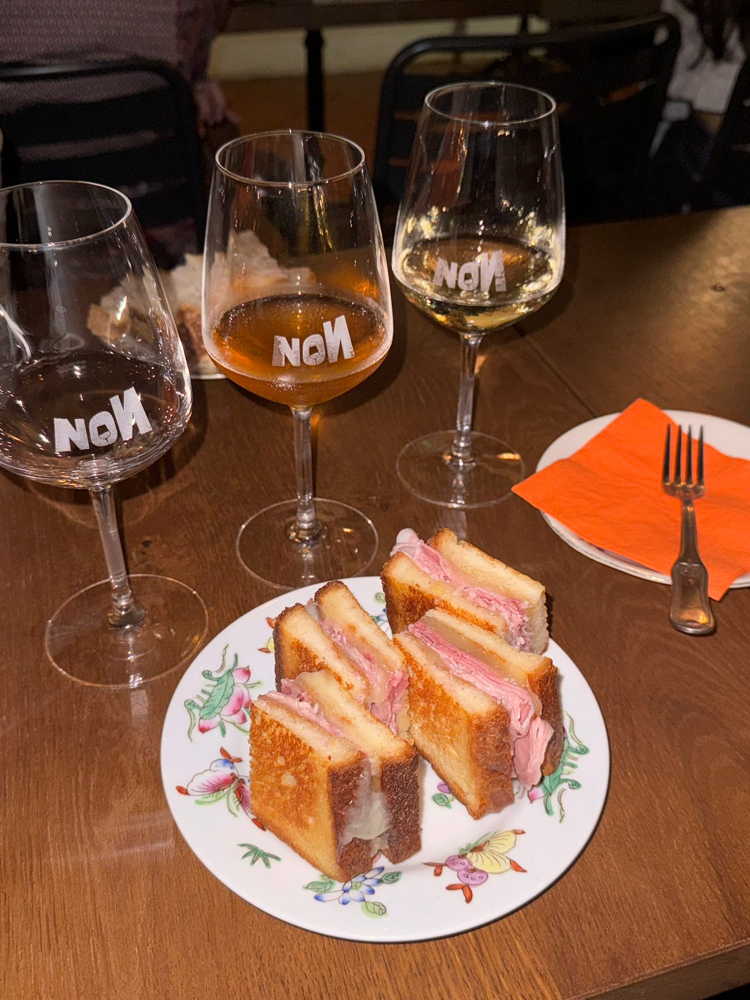
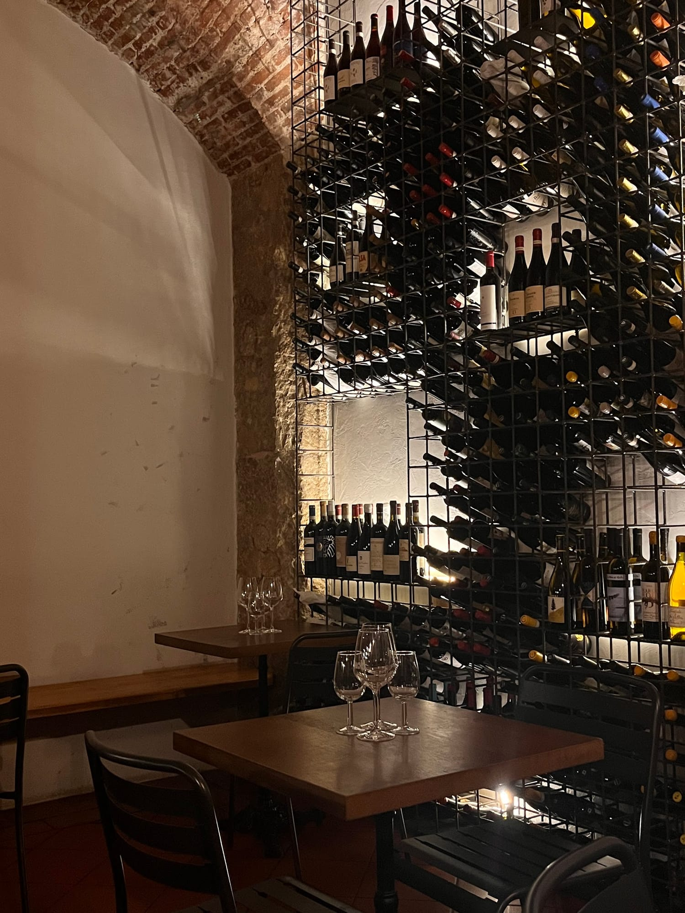
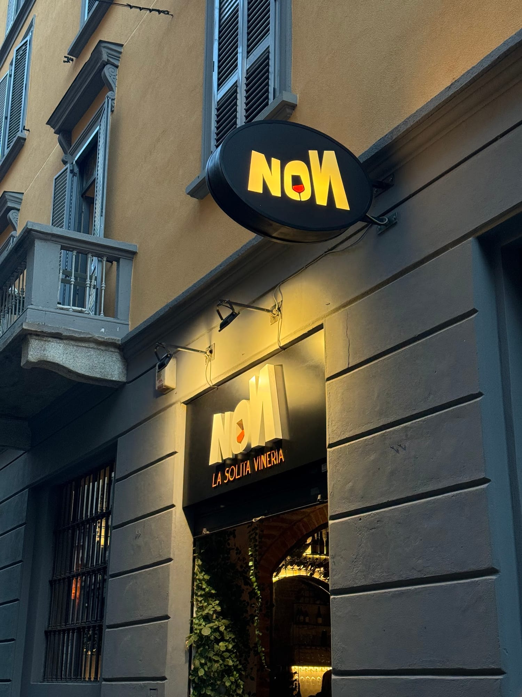
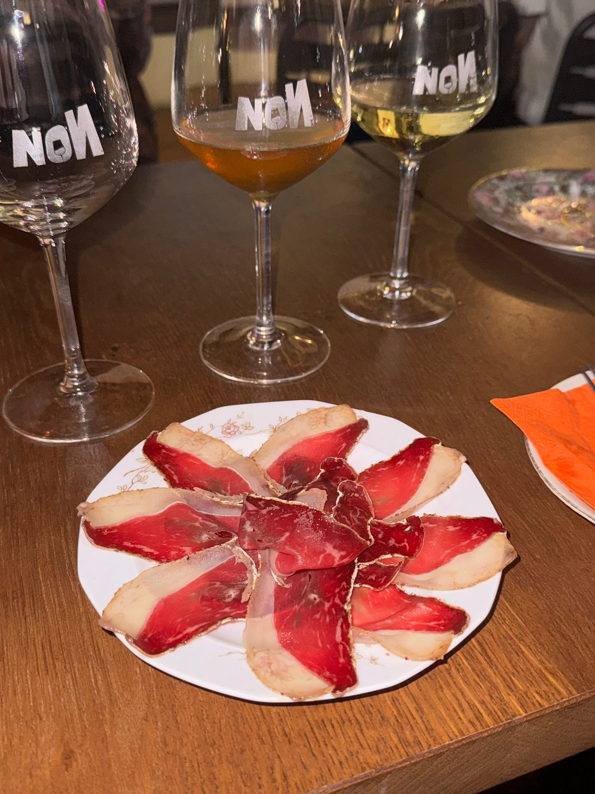
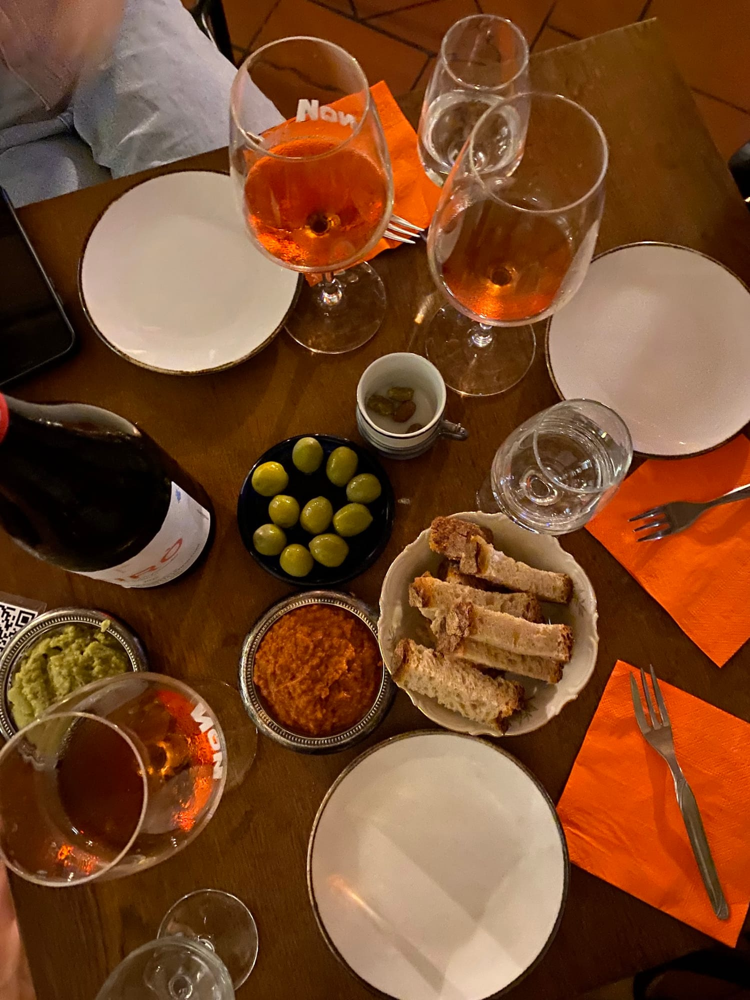
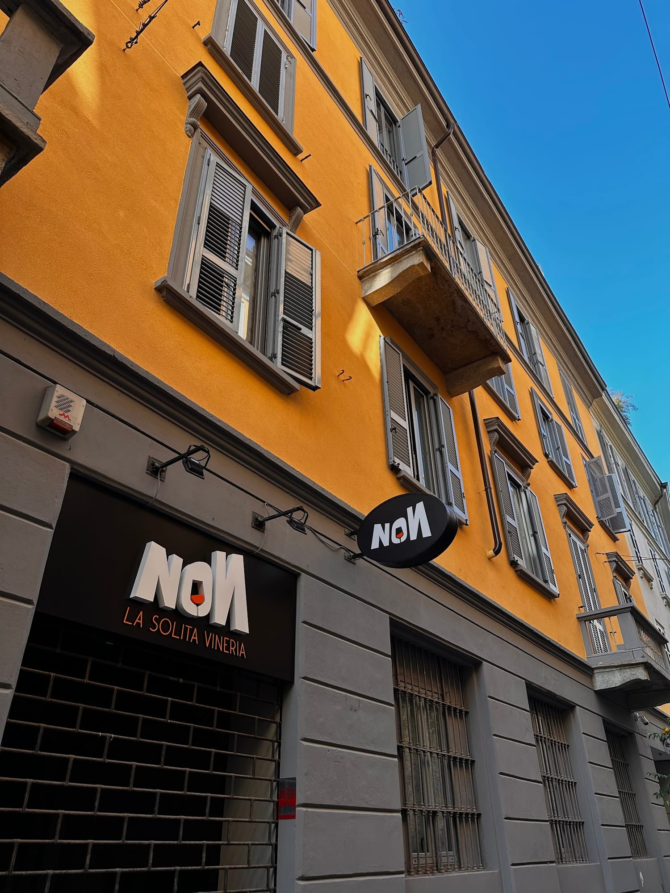

Vineria · Via Orti · Porta Romana, Milano
NON la solita vineria.
Una cantina studiata di vini che non ti aspetti, salumi e formaggi ricercati e il toast più buono di Milano. Dalla sera in poi, senza fretta.
Non è un nome, è una promessa
«NON la solita vineria» non è solo un nome. È il modo di stare qui: vini che escono dai soliti nomi, piattini fatti come si deve, e nessuno che ti mette fretta.
Una cantina profonda e studiata, un menù pensato per accompagnare il vino, e due padroni di casa che ti fanno sentire a casa. Il format è studiato — e si sente.

NON la solita carta
Una parete intera di etichette, al calice o in bottiglia. Rossi, bianchi, bolle e macerati — tanti da piccoli produttori, spesso fuori dai nomi che conosci già. E se non sai da dove partire, Valentina, la sommelier, ti guida verso il calice giusto.
- Cantina profonda e studiata
- Al calice o in bottiglia
- Macerati, bolle, piccoli produttori
- Consigliata da una sommelier vera

NON i soliti piattini
Salumi e formaggi scelti, piattini ricercati pensati per il vino — e il loro pezzo forte: il toast, che per molti è semplicemente il più buono di Milano. Poche cose, tutte fatte come si deve.
- Il toast, il loro fiore all'occhiello
- Salumi e formaggi di qualità
- Sfoglia con coppa di testa e salsa verde
- Crostino con mascarpone e pomodorini confit

NON la solita accoglienza
Ambiente curato ma informale, sotto una volta di mattoni in una via tranquilla di Porta Romana. A tenere il locale ci sono Valentina, la sommelier, e Daniele, padrone di casa: competenza e simpatia, quella rara da trovare. Ti siedi e non hai voglia di andartene.
- Volta di mattoni, luci basse
- Valentina, la sommelier
- Daniele, il padrone di casa
- Curato ma informale, mai di fretta
Una serata da NON
Vini, piattini e nessuna fretta




Lo dicono i clienti
4,3 su Google, 96 recensioni
Il format è studiato ed effettivamente «Non la solita vineria» non è solo un nome. La cantina è profonda e molto studiata, il menù accompagna egregiamente il vino. E la sommelier, Valentina, super!
Ho bevuto dei vini eccellenti e assaggiato piattini strepitosi, con materie prime ricercate. Daniele è un padrone di casa molto cordiale e Valentina ha interpretato alla perfezione i nostri desideri enologici.
Servizio preciso, cordiale e competente sui vini, prezzo adeguato; oserei dire il miglior toast di Milano. Molto consigliato!
Atmosfera piacevole, informale ma raffinata. Notevole la competenza e la simpatia di chi ci ha accompagnato nel percorso di degustazione. Salumi e formaggi tutti buonissimi. Una bella sorpresa.
Interessanti proposte al calice o alla bottiglia, e stuzzichini ricercati, salumi e formaggi di qualità. Ho apprezzato la sfoglia con coppa di testa e salsa verde.
Very good spot for a date! They are truly masters of wine, and the friendly staff will help you make the right choice.
Dove siamo
In Via Orti, a Porta Romana
-
Indirizzo
Via Orti 4
20122 Milano - Orari
- Servizio Consumazione sul posto · Asporto
Domande frequenti
Prima di venire
Che orari fate?
Siamo aperti dal lunedì al sabato, dalle 18:00 a mezzanotte. La domenica siamo chiusi.
Serve prenotare?
La prenotazione è consigliata, soprattutto nel weekend: dopo le 19:30 il locale si riempie. Puoi prenotare comodamente online.
Si mangia o si beve soltanto?
Entrambe le cose: oltre alla carta dei vini ci sono salumi, formaggi, piattini ricercati e il nostro toast. Perfetto per un aperitivo o un'apericena leggera.
Che tipo di vini avete?
Una carta ampia e studiata: rossi, bianchi, bolle e macerati, molti da piccoli produttori. Si può bere al calice o scegliere una bottiglia, con la guida della sommelier.
Si può prendere da asporto?
Sì, oltre alla consumazione sul posto è possibile l'asporto. La consegna a domicilio invece non è prevista.